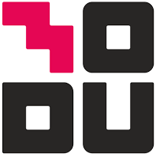
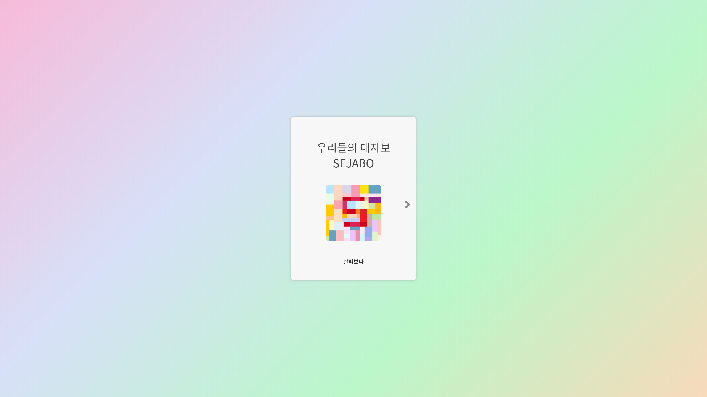
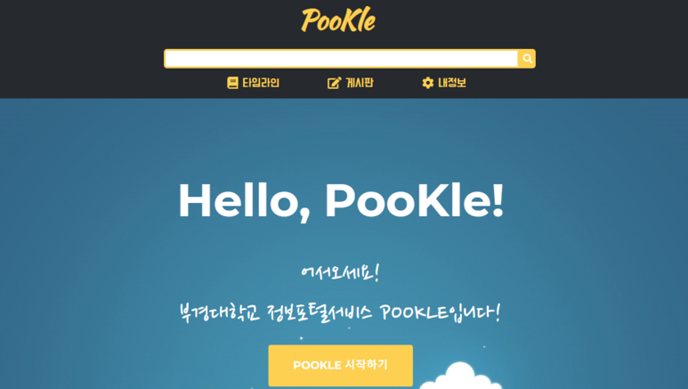
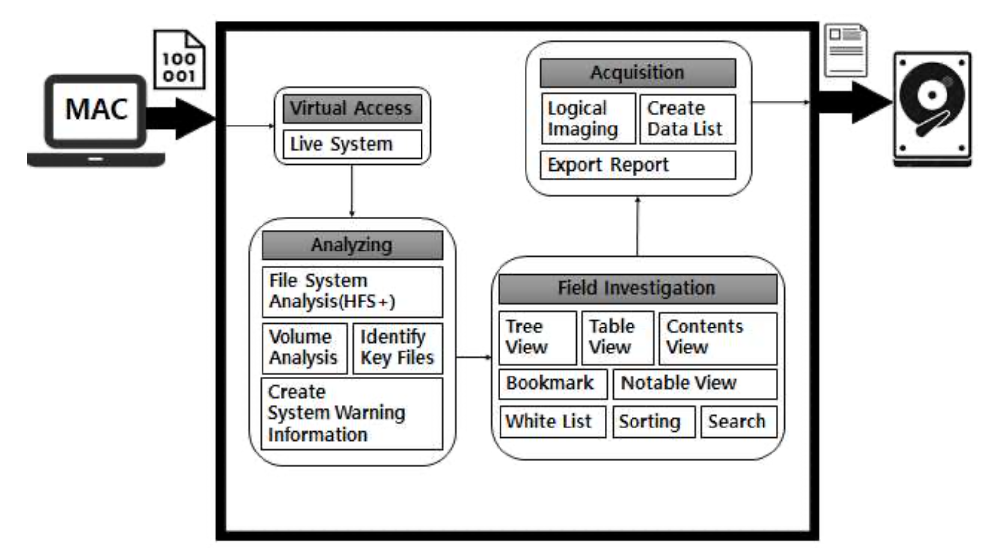

Project
지금까지 제가 기여했던 프로젝트에 대하여 서술하는 공간입니다.
📚 제목을 클릭하면, 관련 페이지로 이동할 수 있어요!
📌 프로젝트에서 제가 수행했던 포지션이에요!
2021
지무역

세상 편한 지하철 위치 추적 앱, 지무역!
다들, 지하철을 타고 갈때 이런 생각한 적 없으신가요? "지금 무슨 역이지?"
그래서 등장한 세상 편한 지하철 위치 추적 앱, 지무역입니다!
지무역은 iOS 환경에서 Swift로 구현된 어플리케이션으로, 쉽고 빠르게 현재역을 파악하고 가고 싶은 도착역까지의 거리를 트래킹해주는 기능을 가지고 있습니다.
👨👦👦팀 구성 - 개발 1명/ 디자이너 1명
📌어플리케이션 전체 기획 및 개발
2020
RAAS
법률 전문가를 위한 법령 분석 서비스
RAAS는 복잡한 법률 리서치를 누구나 손쉽게,
법조계 전문가를 대체할 정도의 자동화 서비스를 목표로 합니다.
저는 해당 프로젝트의 PM 및 백엔드 시스템 설계/구현을
담당하였습니다.
👨👦👦팀 구성 - 백엔드 개발 2명/ 프론트엔드 1명 / 디자이너 1명
📌서비스 전체 기획 및 설계
📌법령 관련 정보 수집 및 정제/분석
📌법률 정보 링크 및 종합 검색 기능 구현
📌백엔드 시스템 설계 및 구현
SIGNUS
대학생을 위한 뉴스피드 추천 서비스
SIGNUS는 흩어져 있던 정보들을 한 곳으로 통합시켜 필요한 정보의 탐색을 용이하게 하고, 사용자의 액션을 수집하여 대학교 전체의 흐름을 파악하는 유의미한 가치의 정보를 수집합니다. 정보를 체계화하고 접근성을 높여 정보의 소비량을 증진시키고 학생들이 보다 편리하게 학교생활에 임하는 것이 가능할 것이라 기대합니다!
👨👦👦팀 구성 - 백엔드 개발 2명/ 프론트엔드 1명 / 추천 시스템 개발 1명
📌서비스 전체 기획 및 설계
📌Content Based 추천 시스템 개발
📌서버 인프라 구축 및 유지보수
📌백엔드 시스템 설계 및 구현
2019
HAIM

인공지능 기반의 한글 캘리그라피 디자이너
하임은 한글 단어 혹은 문장 텍스트를 예쁜 캘리그라피로 바꿔주는 서비스입니다.
전문가들의 서체로 학습한 인공지능을 통해, 간편하게 자신이 원하는 텍스트를 전문가 퀄리티의 캘리그라피로 만들어 낼 수 있습니다.
👨👦👦팀 구성 - AI 모델 개발 2명/ 프론트엔드 1명
📌프로젝트 기획
📌InfoGan 기반 이미지 생성 모델 개발
SOOJLE
세종대학생들을 위한 뉴스피드 추천 서비스
SOOJLE은 사용자가 행동 패턴을 지속적으로 분석하여, 사용자가 원하는 정보를 예측하여 뉴스피드를 형성합니다. Deep-learning 기반의 추천 시스템을 통해 자연스럽게 질 좋은 컨텐츠가 노출, 공유되며, 원할한 정보 소비가 가능합니다.
👨👦👦팀 구성 - 백엔드 개발 2명/ 프론트엔드 1명
📌서비스 전체 기획 및 설계
📌Content Based 추천 시스템 개발
📌서버 인프라 구축 및 유지보수
📌백엔드 시스템 설계 및 구현
AIR-DELAY-PROJECT

항공 지연 및 결항 예측 프로젝트
2019 빅콘테스트 퓨처스리그에 출전하여, 수행하게 된 프로젝트입니다.
항공 시즌 스케줄, 운항데이터 등 항공운항데이터(한국공항공사)와 항공기상데이터 등을 활용하여 항공지연 예측 모형을 개발하였습니다.
👨👦👦팀 구성 - 데이터 분석 및 모델 개발 3명
📌항공 데이터 분석 및 feature engineering
📌학습 모델 개발 및 파라미터 튜닝
Modakbul
세종대학교 소프트웨어융합대학 웹사이트 개발
본 프로젝트는 소프트웨어융합대학 제 3대 학생회 "번영"에서 주최하는 공모전 "웹으로 소융대를 설명하라"를 위해 수행되었습니다. 기존의 소프트웨어 융합 대학 웹 페이지를 분석하고 문제점을 개선하고, 인터렉티브 웹을 통해서 세종대학교 소융대의 위상을 높이고, 향후 소융대 재학생 및 구성원들의 편의를 도모하기 위해 개발되었습니다.
👨👦👦팀 구성 - 백엔드 2명 / 프론트엔드 2명
📌프로젝트 기획 및 관리
📌백엔드 서버 인프라 구축 및 유지 보수
📌API 및 DB ERD 설계 및 구현
SEJABO

대자보 기반 교내 SNS 커뮤니티
기존의 교내에서 사용되던 홍보 수단을 분석 및 개선 방을 도출하여 해당 서비스의 사용성을 증대시키고, 모든 정보를 체계화하여 더 효율적인 홍보 및 게시가 가능하게 합니다.
👨👦👦팀 구성 - 백엔드 1명 / 프론트엔드 2명
📌프로젝트 기획 및 관리
📌API 및 DB ERD 설계 및 구현
2018
POOKLE

부경대학교 정보 포탈 검색 서비스
부경대학교 관련 사이트에 대하여 게시글 정보를 수집하고 연관성 및 관심도에 맞춰 분류해주는 정보 포털 서비스로, 부경대학교와 관련된 약 130개 이상의 사이트의 게시판에서 모든 글을 수집하여, 해당 글의 목적과 사용자의 관심도에 따라 타임라인을 생성합니다.
👨👦👦팀 구성 - 데이터 크롤러 개발 1명 / 풀스택 1명
📌프로젝트 기획 및 관리
📌커뮤니티 데이터 수집 및 DB 설계
2017
MacroScope

현장 기반 Mac 포렌식 도구 개발 프로젝트
기존의 포렌식 분석 도구들은 수사관이 현장에서 MAC 포렌식을 수행할 때, 우리나라의 증거 수집 정책인 선별압수에 배려가 되어있지 않고, 또 분석 도구 자체의 완성도나 현재 운영체제 버전과의 호환 문제가 거론되어, 효율적인 수사에 임할 수 있도록 돕는 분석 도구를 개발하게 되었습니다.
👨👦👦팀 구성 - 솔루션 개발 3명 / 파일 시스템 및 OS 분석 2명
📌프로젝트 기획 및 관리
📌솔루션 모듈 개발